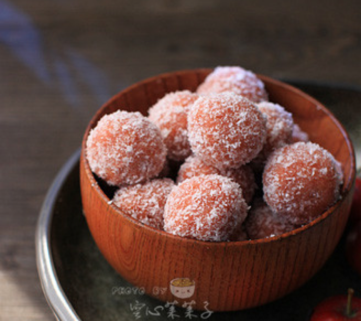
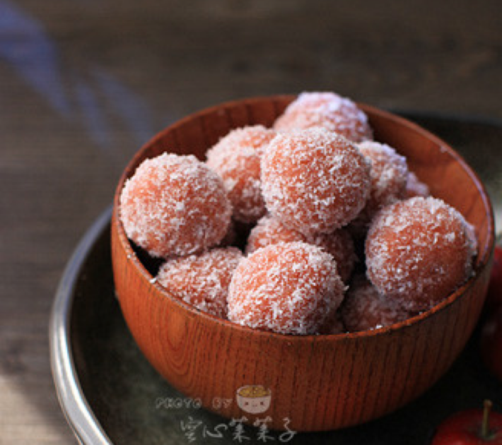
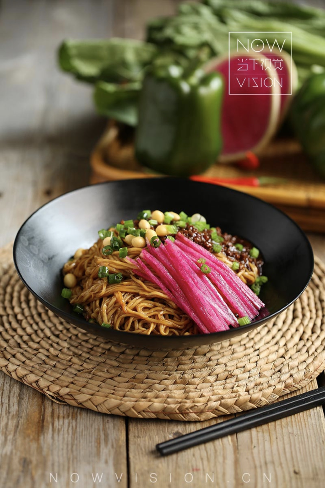
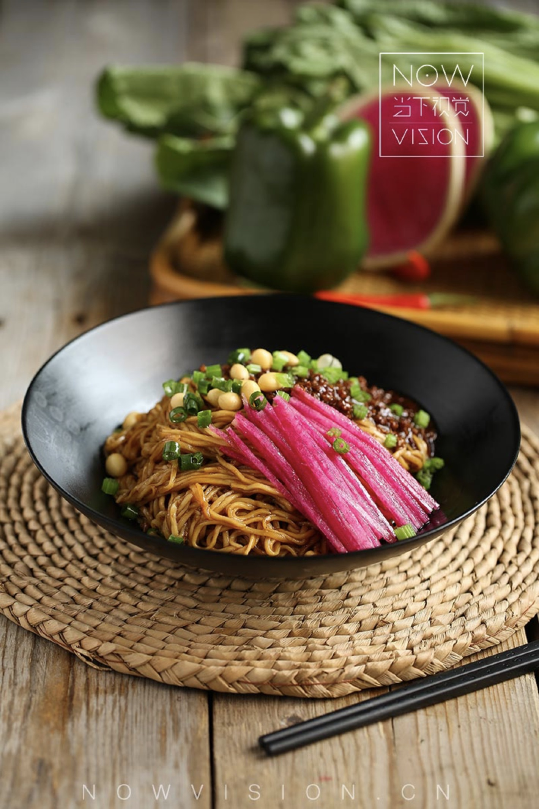
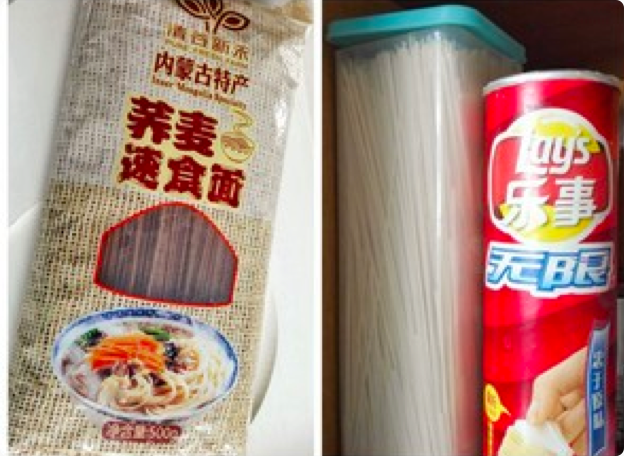
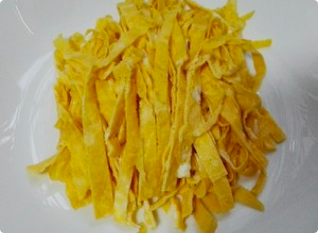
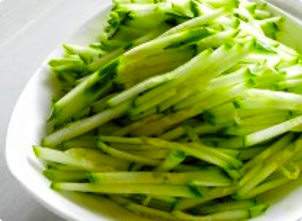
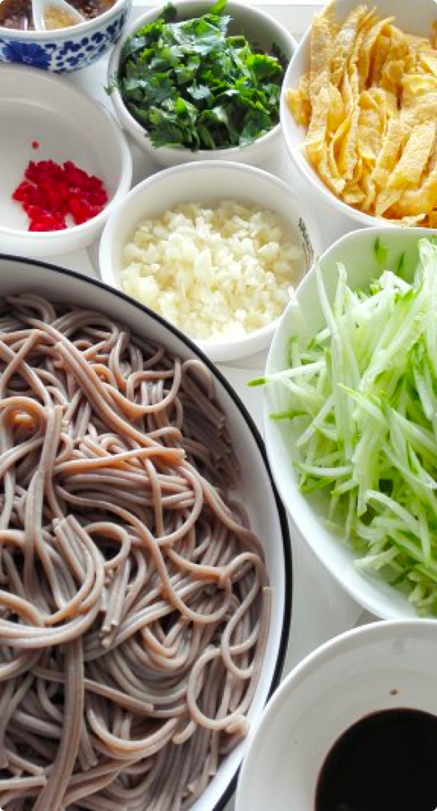
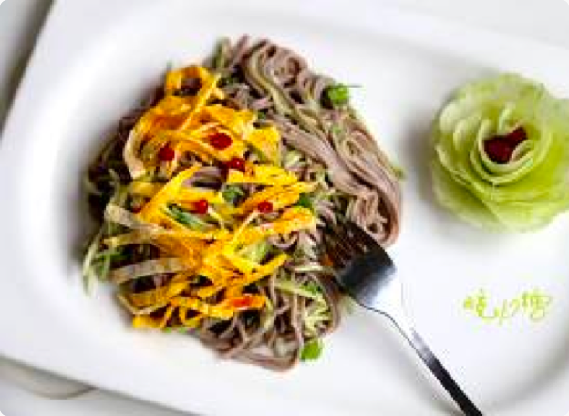

 

{{name}}
{{introduce}}

营养成分
热量340.34大卡
脂肪00.00克
蛋白质12.00克
纤维素6.00克
碳水化合物72.00克
食用材料
荞麦面180.00克
绿豆芽10.00克
黄瓜30.00克
苹果20.00克
鸡蛋一个
芝麻2.00克
海苔2.00克
姜蒜蓉5.00克
香油3茶匙
香醋半茶匙
生抽半茶匙
白糖40.00克
辣椒油两茶匙
菜谱做法
1
荞麦速食面用50°C左右的开水浸泡20-25分钟，泡软后沥尽水，泡面的时间准备其他材料。

2
摊鸡蛋薄饼，摊好后切丝备用。

3
黄瓜、苹果洗净切丝，蒜切末，香菜切末。

4
泡好的面沥净水，上面放上黄瓜丝、鸡蛋丝、香菜末等、蒜末、盐、少许糖、生抽、香醋、蚝油。另外起锅，放适量色拉油、加少许香油，七成热时加花椒，花椒变色捞出扔掉，碗里放入干辣椒碎和芝麻，将炸好的油浇在辣椒碗里，这就是辣椒油，一次也可以多炸一些辣椒油，平时拌凉菜或拌面吃。

5
将辣椒油浇在面条上 不喜欢吃辣椒的可以直接将炸好的花椒油浇在面条上，拌匀即可开吃。
